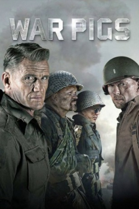

Marcas da Guerra (2015)


Victory is the only option

Avaliação (TMDb):


4.9/10 (79 votos)
Avaliação (Usuário):
Outro Título:War Pigs
País:United States, 92 minutos
Idiomas falados:Inglês, Português
Gênero(s):Guerra, Ação
Diretor(s):Ryan Little
Codec:MPEG-2 (DVD)
Número: 2546
Sinopse:
Uma unidade desajustada conhecido como o War Pigs deve ir atrás das linhas inimigas para exterminar os nazistas por qualquer meio necessário.
Elenco:
Luke Goss, Dolph Lundgren, Chuck Liddell, Noah Segan, Steven Luke, Mickey Rourke, Ryan Kelley, Angie Papanikolas, Jake Stormoen, K.C. Clyde
Tipo de mídia: DVD5,
Legendas: Português
Alugado: Não
Tela: 1.78:1